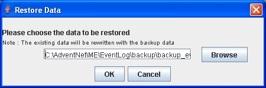

将EventLog Analyzer数据从MSSQL迁移到MySQL数据库
注意：此部分的信息，仅适用于EventLog Analyzer版本8.0（构建号8000）及之前的产品，对于之后的产品，我们将不再提供对此功能的支持。
EventLog Analyzer支持用户将MSSQL数据库中现有的EventLog Analyzer数据移动到MySQL数据库。
要迁移数据库库，请参阅以下步骤：
-
停止Eventlog Analyzer服务器/服务。
-
在命令行中调用<Eventlog Analyzer Home>\tools\backUpDatabase.bat
，它用于备份MSSQL数据库中现有可用的数据，请等待数据备份进程结束。默认备份文件将会存储在<Eventlog Analyzer Home>\backup
目录下，文件名称将会表示为backup_eventlog_<Build_Number>_MM_DD_YYYY_hh_mm.data。
-
在命令行中运行 <Eventlog Analyzer Home>\bin\startDB.bat
。
-
在命令行中调用<Eventlog Analyzer Home>\tools\changeDBServer.bat
，它用于配置MySQL服务器的凭证信息，如主机名称、端口、用户名和密码。
-
数据库设置向导 窗口打开。
-
在向导窗口，选择服务器类型为Mysql服务器。
-
输入MySQL服务器的主机名和端口。
-
输入用户名和密码。
-
点击测试（Test）按钮检查凭证是否正确，如果测试失败，那么表示输入的凭证可能错误，请检查后再次输入并测试。
-
点击保存（Save）按钮来保存MySQL服务器配置，这需要几分钟来配置MySQL数据库的设置，请耐心等待。
-
在命令行中运行 <Eventlog Analyzer Home>\bin\stopDB.bat。
-
在命令行中运行 <Eventlog Analyzer Home>\bin\run.bat
，启动Eventlog Analyzer服务器。
-
在服务器完全启动之后，在命令行中终止 run.bat 以停止服务器，或调用 <Eventlog Analyzer Home>\bin\shutdown.bat。
-
调用<Eventlog Analyzer Home>\tools\restoreDatabase.bat，浏览并选择创建的备份文件，点击确定（OK）
并等待数据库完全恢复。

 |
执行restoreDatabase.bat将会删除现有的数据。
|
-
启动Eventlog Analyzer服务器/服务。
|
说明：您也可以修改备份的目录，只需在命令行中执行备份数据库的批处理文件时，将备份文件要存储到的位置的绝对路径作为参数即可，例如：
<Eventlog Analyzer Home>\tools:\>backUpDatabase.bat D:\Mysql |
|